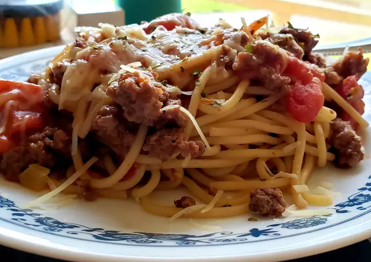
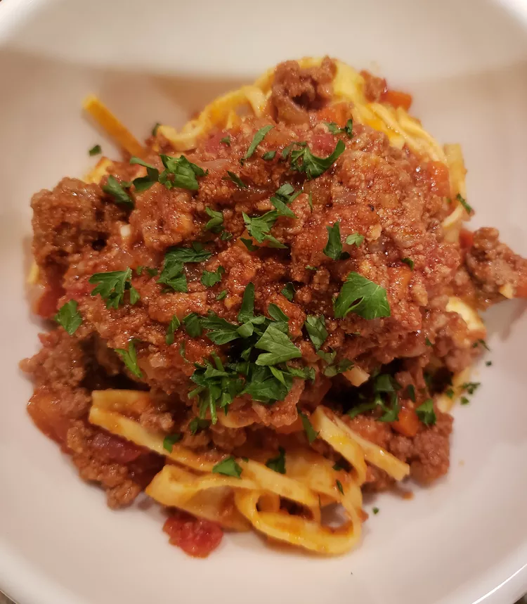

Bolognese sauce

Description
This homemade Bolognese sauce is dedicated to the late great Marcella Hazan. She was considered the Julia Child of Italian food. At a time when most Americans thought Bolognese was spaghetti sauce with chunks of hamburger, Marcella taught us just how magnificent this meat sauce could be. I like to toss it with some mezzi rigatoni and serve it with a little grated Parmesan cheese and a sprinkle of parsley.
Ingredients
- 2 tablespoons butter
- 1 tablespoon olive oil
- 1 cup finely diced onion
- ½ cup finely diced carrot
- ½ cup finely diced celery
- 1 pinch salt
- 1 ½ pounds ground beef
- ⅛ teaspoon ground nutmeg
- 1 pinch cayenne pepper, or to taste
-
- 1 ½ cups 2% milk
- 2 cups white wine
- 1 (28 ounce) can whole Italian plum tomatoes (preferably San Marzano)
- 2 cups water, or as needed
Steps:
- Melt butter with olive oil in a large saucepan over medium heat. Add onion, celery, carrot, and 1 pinch salt; cook and stir until onion turns translucent, about 5 minutes.
- Stir ground beef into vegetables; cook and stir until meat is crumbly and no longer pink, about 5 minutes. Season with 1 1/2 teaspoons salt, nutmeg, cayenne pepper, and black pepper.
- Pour milk into ground beef mixture and bring to a simmer. Cook, stirring frequently, until most of the milk has evaporated and the bottom of the pan is still slightly saucy, about 5 minutes.
- Increase heat to medium-high and pour in white wine; cook and stir until wine has mostly evaporated, about 5 minutes.
- Pour tomatoes with juice into a large mixing bowl; crush them with your hands until they resemble a chunky sauce. Pour tomato mixture into ground beef mixture; fill the tomato can with 2 cups water and stir into sauce. Bring to a boil.
- Reduce heat to low and simmer, stirring often, until mixture cooks down into a thick sauce, at least 3 hours but preferably 4 to 6 hours. Skim fat from the top of sauce if desired. Add more water if sauce is too thick. Taste and adjust seasonings before serving.
